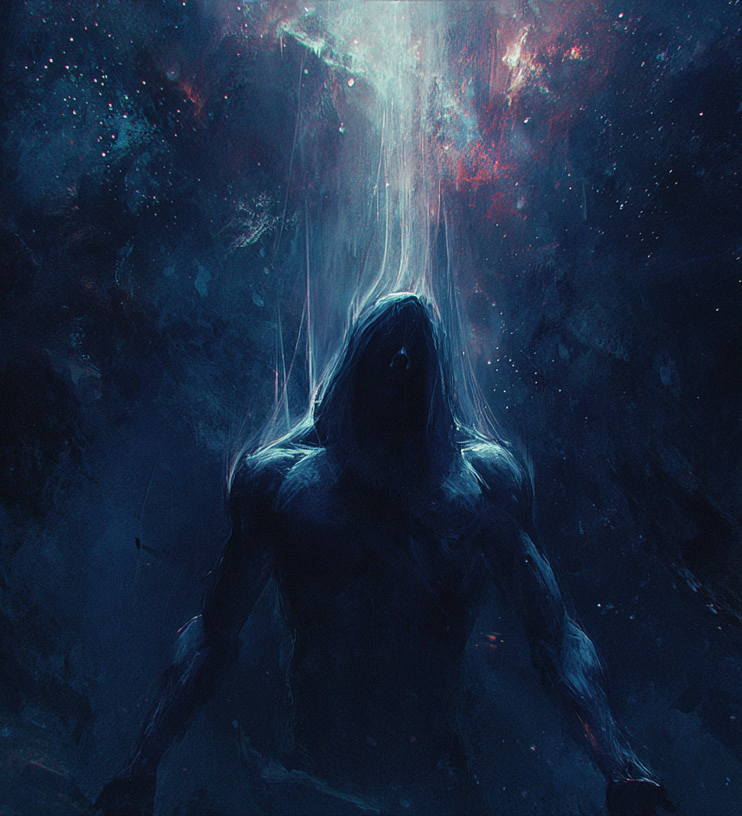

A Última Luz do Universo
Quando a primeira existência nasceu, ela também foi criada. Antes do fim ter um nome, o aspecto do fim já estava lá, não como um evento, mas como uma presença, antiga e constante, responsável por conduzir até mesmo os perpétuos ao silêncio inevitável. É o compromisso inegociável de que, quando a última vida tiver sido coletada, seria ela então a responsável por colocar as cadeiras sobre a mesa, apagar as luzes e se despedir do universo enquanto ele acaba. Contudo esse poder representa não a sina do perpétuo da morte, mas o seu mais precioso desejo, de permitir que fiquem. Aqueles tocados por essa bênção carregam esse erro sutil na própria essência, uma falha quase imperceptível na ordem natural, como se a Morte, ao estender a mão, tivesse interrompido o gesto por um breve segundo, permitindo que algo ficasse para trás. A primeira manifestação desta regalia, a mudança sobre o entendimento de seu corpo em relação a vida e a morte. Não como um milagre ou uma recuperação súbita, mas como uma segunda sustentação silenciosa que se instala sob a carne, fria e estável, mantendo o corpo de pé mesmo quando ele já deveria ter cedido. Não se trata de uma nova vida, mas de uma extensão do próprio fim, uma camada adicional que sustenta o corpo através de uma lógica que não pertence aos vivos. A segunda manifestação desta benção, é a capacidade de ferir um inimigo, e consumir o fluxo de sua própria vida, que é puxado de volta como um reflexo instintivo dessa ligação com esse novo limiar estranho que nasceu em seu corpo. Essa energia não retorna de forma pura, mas se divide, alimentando tanto o que ainda pulsa quanto aquilo que já deveria estar em silêncio. No fim, quem carrega essa bênção não pode mais ser entendido como alguém que simplesmente sobrevive ao dano. Ele persiste porque não terminou de morrer, e enquanto essa condição existir, continuará se erguendo, sustentado por algo que não pertence mais ao domínio da vida, mas que também ainda não foi completamente reclamado pela Morte, em uma manifestação de seu desejo proibido.

Efeito
Concede +20% HP TOTAL, +9 SPD e roubo de vida de 5% do dano causado como HP regenerado. Desenvolve uma segunda barra de HP, chamada de HP Mortuário, que estará sempre zerada. Sempre que o portador perder HP, também perderá HP TOTAL, sendo este então transformado em HP Mortuário TOTAL, e portanto vazio. O HP Mortuário TOTAL deverá ser considerado como parte do HP Principal no cálculo de dano do personagem e para o cálculo de qualquer tipo de stack, seja em virtude de passivas, poderes, bênçãos e etc. Ainda que o HP Mortuário seja curado ou abastecido, ele continuará a ser considerado vazio para outras regalias. Portanto, caso 70% de seu HP Principal tenha se tornado HP Mortuário, sendo ele curado ou vazio, será considerado vazio para todos os demais efeitos de sua build. HP Mortuário só poderá ser curado por Roubo de Vida, ou por cura ctônica. [Morte]
Refino
- R2: +25% HP TOTAL, +12 SPD, 5% roubo de vida
- R3: +30% HP TOTAL, +15 SPD, +10% roubo de vida
- R4: +35% HP TOTAL, +18 SPD, +10% roubo de vida
- R5: +40% HP TOTAL, +21 SPD, +15% roubo de vida